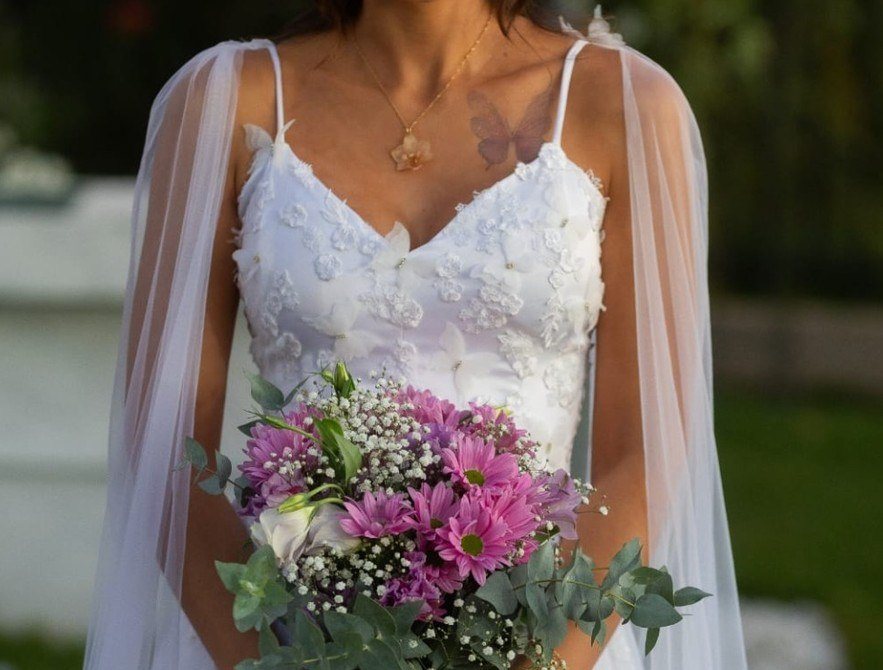
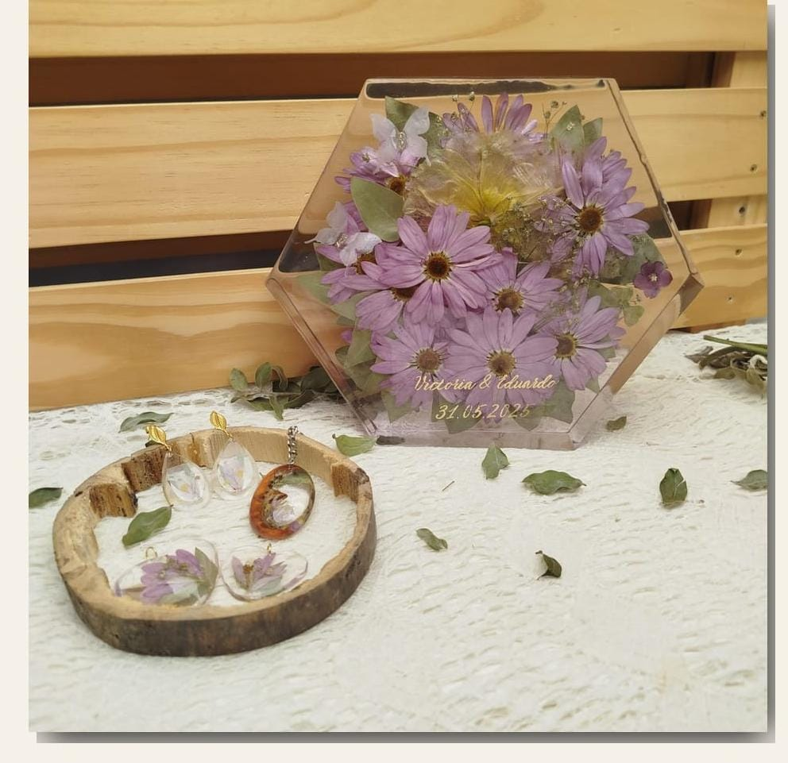
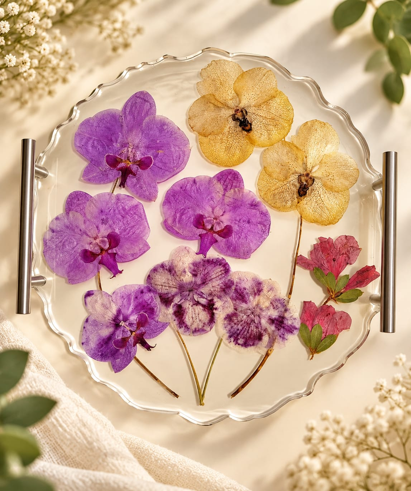
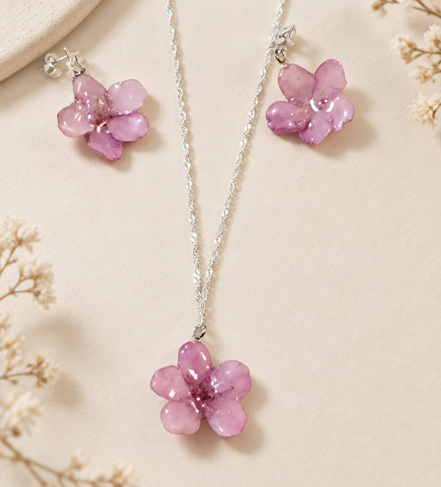
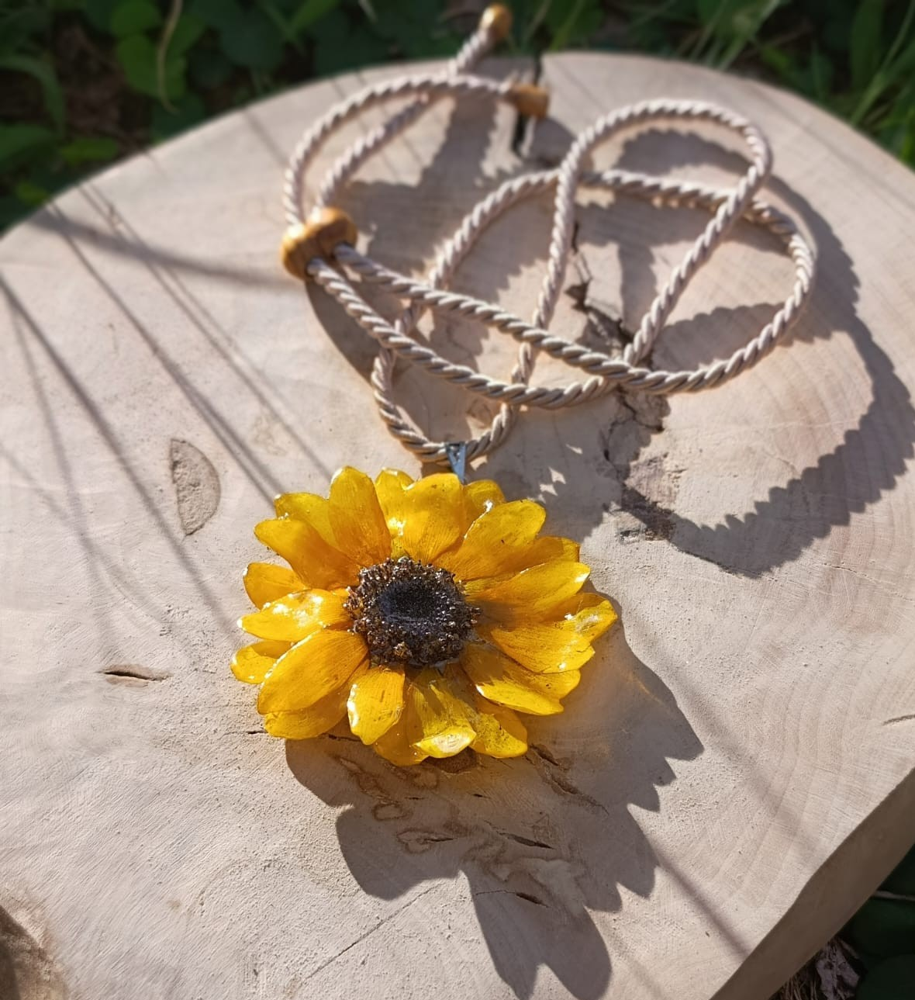
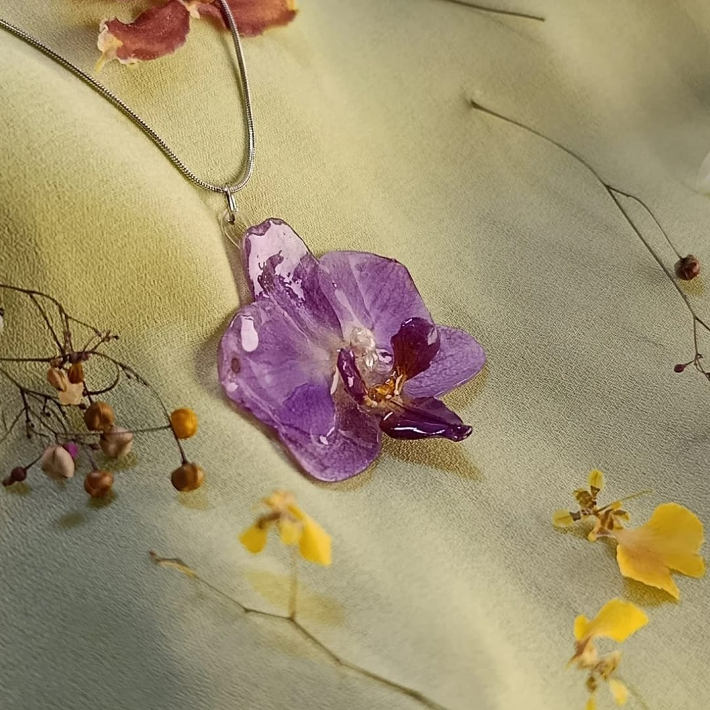
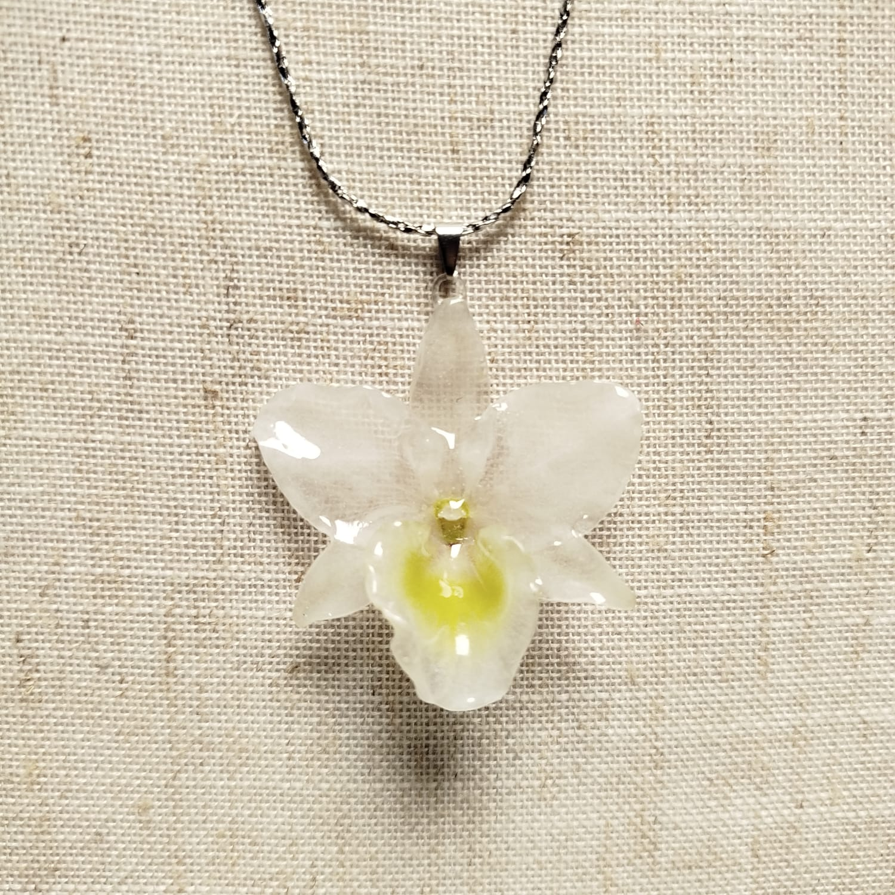
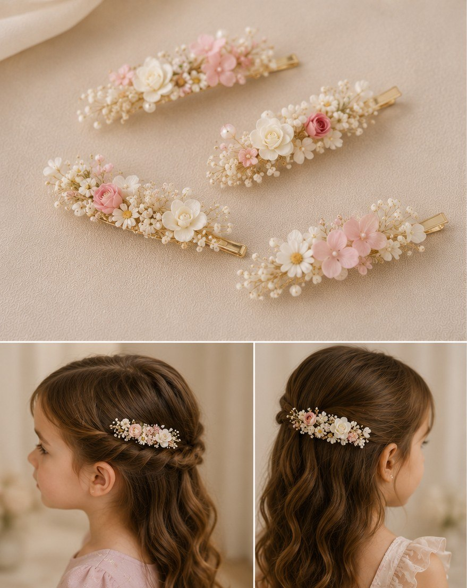

Flores naturais transformadas em joias para carregar uma história junto de você.
Preservação botânica de memórias
Flores que guardam histórias.Arte que transforma memórias em eternidade.
Cada flor carrega um instante.
Nós preservamos o significado que existe nele.
Na Cler Ateliê Botânico, transformamos flores que fizeram parte de momentos especiais em peças únicas, criadas artesanalmente para que a beleza, a emoção e a história possam continuar presentes.
Há histórias para descobrir
O instante passa.
O significado permanece.

O que nos moveAlgumas flores fazem parte de um momento.
Algumas flores fazem parte de um momento.
Outras passam a fazer parte da nossa história.
Um casamento. Uma conquista. Um encontro.
Um presente inesperado. Uma despedida. Uma lembrança que merece permanecer.
Na Cler, acreditamos que algumas flores carregam muito mais do que beleza. Elas carregam sentimentos, pessoas e histórias que não queremos esquecer.
Por isso, cada flor que chega ao nosso ateliê é recebida com cuidado e transformada em uma peça única — feita para preservar não apenas a flor, mas aquilo que ela representa para você.
Porque o tempo passa.
A memória permanece.


Eternização de buquês
Seu buquê não precisa terminar naquele dia.
Depois da celebração, as flores podem ganhar uma nova forma — e continuar contando a história de um momento que merece permanecer.
Na Cler, cada flor é recebida com cuidado, respeito e intenção. A partir das suas flores, criamos uma peça única, pensada para preservar não apenas a beleza, mas o significado que existe por trás dela.
Cada história recebe uma criação só sua.
Uma criação só suaDa sua história,
Da sua história,
nasce uma peça única.
Cada buquê é diferente. Cada flor carrega uma lembrança. E cada história merece uma forma especial de permanecer.
Criamos composições em resina que transformam flores significativas em memórias que podem ser vistas, tocadas e revisitadas ao longo dos anos.
Do delicado ao marcante, da preservação fiel à composição autoral, a criação nasce das suas flores e da história que elas carregam.
Composições em resina · Obras botânicas · Peças decorativas · Biojoias · Lembranças personalizadas
Quero preservar minhas floresConte-nos a sua história. Juntos, encontramos a forma de eternizá-la.Não preservamos apenas flores.
Preservamos o que elas significam.
O tempo e o cuidado de cada etapa
Do momento à memória.
Cada flor carrega uma história.
Por isso, cada eternização começa ouvindo a sua.
Conversa
Queremos conhecer a história por trás das flores e entender o que torna esse momento tão especial para você.
Acolhimento das flores
Recebemos suas flores com cuidado e avaliamos cada elemento, respeitando suas características e possibilidades de preservação.
Criação
A partir da sua história e das suas flores, pensamos juntos em uma composição que tenha significado para você.
Preservação
Cada elemento passa por um processo cuidadoso de preparação e preservação, pensado para manter sua beleza e essência.
Arte
É aqui que a memória ganha forma. Cada peça é criada artesanalmente, detalhe por detalhe, respeitando a identidade das suas flores.
O encontro
E então, aquilo que um dia foi um momento volta para você transformado em uma peça para guardar, contemplar e lembrar.
Um olhar sobre nossas criaçõesHistórias que ganharam
Histórias que ganharam
uma nova forma.
Porque na Cler, não preservamos apenas flores.
Preservamos aquilo que elas significam.
O universo ClerA natureza passa.
A natureza passa.
A memória permanece.
A Cler Ateliê Botânico nasceu para transformar flores carregadas de significado em memórias que podem ser tocadas, contempladas e guardadas.
Cada criação nasce do encontro entre natureza, sensibilidade e fazer artesanal. Aqui, cada flor é recebida como parte de uma história — e cada detalhe é pensado para que essa história permaneça.
Conte a sua história
O seu buquê, preservado para que a emoção daquele dia continue presente.
Flores e elementos naturais transformados em peças únicas, criadas a partir da sua história.
Natureza
Tudo começa com algo que a natureza criou.
Memória
E, muitas vezes, uma flor carrega muito mais do que beleza: carrega um momento, uma pessoa, uma história.
Arte
Nas mãos da Cler, essa memória ganha uma nova forma — feita com sensibilidade, cuidado e trabalho artesanal.
Coleções botânicasA natureza transformada em peças
A natureza transformada em peças
para levar uma história com você.
Flores naturais encontram o fazer artesanal para criar peças únicas — delicadas, autorais e cheias de significado.
7 criações autorais

Colar Girassol 3D
Biojoia botânica autoralR$ 179,90
Colar Flor de Cosmos Laranja
Biojoia botânica autoralR$ 129,90
Colar Flor de Orquídea Lilás
Biojoia botânica autoralR$ 139,90
Colar Orquídea Translúcida
Biojoia botânica autoralR$ 149,99Conjunto Cerejeira Sakura 3D
Biojoia botânica autoralR$ 290,00
Presilha com Flores Naturais
Acessório botânicoR$ 120,00
Luminária Cenário de Jardim
Decoração botânicaR$ 450,00Flores naturais tornam cada criação singular. Para preservar as suas próprias flores, converse com o ateliê sobre um projeto personalizado. Disponibilidade sob consulta pelo WhatsApp.
Entre flores, memórias e novos capítulos
@clerateliebotanico(abre em nova aba)Florescendo por aqui.
Um pouco das histórias que florescem no ateliê.
Acompanhe a Cler no InstagramAntes de começarCuidamos das suas flores.
Cuidamos das suas flores.
E de tudo o que envolve essa história.
Cada história é única, e sabemos que surgem muitas dúvidas ao confiar a nós algo tão especial.
Estamos aqui para conversar, orientar e cuidar de cada detalhe com você.
Quanto tempo após o evento devo enviar meu buquê?
Quanto antes, melhor. As flores continuam se transformando depois do corte, por isso o tempo pode influenciar o processo de preservação. Converse com a Cler sobre a data do seu evento e orientaremos a melhor forma de encaminhar suas flores.
Flores já secas podem ser preservadas?
Em alguns casos, sim. Cada flor e cada história são avaliadas individualmente. Envie uma foto para a Cler e veremos juntas as possibilidades de preservação.
Como faço para enviar minhas flores?
Antes de enviar, converse conosco. Orientaremos você sobre os cuidados, a embalagem e a melhor forma de encaminhar suas flores para que cheguem ao ateliê com todo o cuidado que merecem.
Quanto tempo leva o processo de eternização?
Cada história tem seu próprio tempo. O prazo depende das flores, da técnica escolhida e do projeto. Depois de avaliarmos seu caso, informaremos o prazo previsto para sua criação.
Posso escolher como minhas flores serão transformadas?
Sim. A criação nasce do encontro entre a sua história e o nosso olhar artesanal. Conversamos sobre suas preferências, suas flores e o significado daquele momento para encontrar a forma que melhor representa a sua memória.
Vocês enviam para todo o Brasil?
Consulte o ateliê sobre a disponibilidade e as condições de envio para a sua localidade. As possibilidades são confirmadas no atendimento.
Como funciona o pagamento?
As formas e condições de pagamento são combinadas diretamente com o ateliê pelo WhatsApp, junto à confirmação de disponibilidade e frete.
Sua história merece continuarAlgumas flores duram pouco.
Algumas flores duram pouco.
As histórias que elas carregam
podem durar para sempre.
Conte para a Cler qual memória você gostaria de preservar.